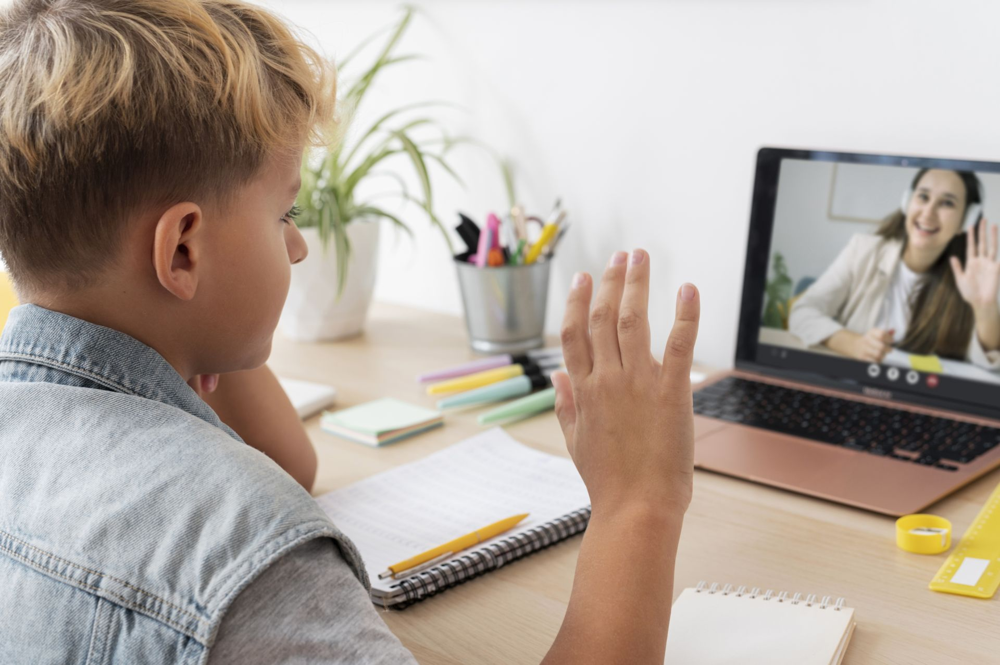

Суть
Core Idea
Це не просто курси англійської, а повний цикл соціального ліфта - від мовної підготовки до отримання престижного диплома американського зразка в Україні.
This is more than just English courses; it's a full social elevator — from language training to obtaining a prestigious American-style degree right here in Ukraine.

Контекст
Context
Через війну талановиті діти вразливих категорій (діти загиблих героїв, ВПО, діти військових) втратили доступ до якісної освіти. Ми пропонуємо дати їм шанс на міжнародну кар'єру, не виїжджаючи з країни.
Due to the war, talented children from vulnerable categories (children of fallen heroes, IDPs, children of military personnel) have lost access to quality education. We offer them a chance for an international career without leaving their home country.
Механіка
Mechanics
30 дітей навчаються на офлайн-курсах англійської мови на базі AUK. Після закінчення курсів проводиться конкурс і 5 найкращих отримують повну стипендію на 4 роки бакалаврату.
30 children study English in offline courses at AUK. Upon completion, a competition is held, and the 5 best students receive full scholarships for a 4-year bachelor's degree.
Чому це важливо
Why It Matters
Це створення нової інтелектуальної еліти України. Результат - конкретна дитина з вищою освітою світового рівня.
This is about creating a new intellectual elite for Ukraine. The result is a specific child receiving a world-class higher education.
Курси 12 міс. + 5 стипендій: $108,832 ($8,832 курси + $100,000 навчання).
12-month courses + 5 scholarships: $108,832 ($8,832 courses + $100,000 tuition).
Суть
Core Idea
Відновлення доступу до навчання у Близнюківській громаді (40-60 км від фронту), де діти перебувають в ізоляції.
Restoring access to education in the Blyznyuky community (40-60 km from the front line), where children are currently in isolation.


Контекст
Context
У селах Харківщини постійні обстріли та відсутність стабільного інтернету роблять онлайн-навчання проблематичним. Ми створюємо безпечні офлайн-хаби, де будуть проходити курси з вивчення англійської мови.
In the villages of the Kharkiv region, constant shelling and the lack of stable internet make online learning problematic. We create safe offline hubs where English language courses are held.
Механіка
Mechanics
Створення мережі з 4 локацій, де 160 дітей (розділені на 20 груп) будуть вивчати англійську мову з професійними вчителями. Фонд забезпечує підручники та оплату праці команди.
Creating a network of 4 locations where 160 children (divided into 20 groups) will study English with professional teachers. The Foundation provides textbooks and covers staff salaries.
Чому це важливо
Why It Matters
Це повернення дітей до соціалізації та нормального життя. Це інвестиція у прифронтовий регіон, який потребує підтримки найбільше.
This brings children back to socialization and normal life. It is an investment in a frontline region that needs support the most.
Ефективність: всього $213 на дитину за рік якісного навчання.
Efficiency: only $213 per child for a year of quality education.
Суть
Core Idea
Підтримка та розширення діючої онлайн-школи, яка вже навчає 250 дітей з усієї України.
Support and expansion of the existing online school, which already teaches 250 children from all over Ukraine.

Контекст
Context
Наша онлайн-школа - це «освітній тил» для дітей, які розкидані по всій Україні та за кордоном. Ми вже маємо працюючу структуру, яку можна масштабувати.
Our online school serves as an "educational rear" for children scattered across Ukraine and abroad. We have an established structure ready for scaling.
Механіка
Mechanics
Донор може або покрити витрати на існуючу програму англійської, або спонсорувати нові напрямки: Арт-терапія (подолання ПТСР) та Профорієнтація.
Donors can either cover the costs of the existing English program or sponsor new critical areas: Art Therapy (PTSD recovery) and Career Guidance.
Чому це важливо
Why It Matters
Це дозволяє охопити велику кількість дітей одночасно, незалежно від їхнього місця перебування.
This allows us to reach a large number of children simultaneously, regardless of their physical location.
Розширення (арт-терапія, профорієнтація): від $1,500 до $3,000 на місяць.
Expansion (art therapy, guidance): from $1,500 to $3,000 per month.